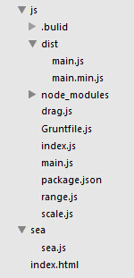

概述
1：之前已介绍过使用seajs模块化开发，遗留下了js文件过多的问题，这里将结合Gruntjs解决。 2：Gruntjs是一个构建工具，有很多实用的插件，具体参考官网。 3：本文主要介绍Gruntjs的安装与使用以及如何使用文件依赖管理,合并文件,压缩文件三个插件。 4：最终目的就是把之前的main.js','drag.js','scale.js','range.js这4个模块文件合并为main.min.js一个模块文件
使用Gruntjs把4个模块文件合并为main.min.js的步骤
//一：安装nodejs npm grunt
//1：安装nodejs 安装后同时也安装好了npm(包管理工具) 通过npm才能进行后续的Grunt安装与管理
//2：安装Grunt的命令行接口：打开cmd 输入 npm install -g grunt-cli
//这条命令会把grunt命令植入到你的系统路径中 这样就可以在任意目录下运行Grunt命令并执行
//3: 安装最新版本的Grunt：输入 npm install grunt --save-dev
//如果当前命令行是C:\Users\domin>npm install grunt --save-dev 那grunt就安装在C:\Users\domin下
//参考第2条 grunt随便安在哪里其实都可以
//4: 查看是否安装成功：输入 grunt -version 如果成功就出现版本号
//二：创建package.json配置文件(在当前项目的js目录下)
//详细写法见package.json文件
//然后在当前项目的js目录下输入命令行 npm install
//这样就在js目录下创建了node_modules文件夹 在这个文件夹下安装了上面的四个插件
//三：创建Gruntfile.js配置文件(在当前项目的js目录下)
//详细写法见Gruntfile.js文件
//然后在当前项目的js目录下输入命令行 grunt
//这样就执行完文件依赖管理 合并文件 压缩文件三个功能 最终在dist目录下形成合并文件main.min.js
//然后在index.js中引用模块1就改写成seajs.use('./js/dist/main.min.js')
//这样就只需要引用一个合并文件 而不需要像之前通过./js/main.js引用4个模块文件 减少了http请求
//四：什么是文件依赖管理？
//在没有合并'main.js', 'drag.js', 'scale.js', 'range.js'这四个文件之前
//他们的写法都是define(function(require, exports, module){xxx require(xxx) xxx}
//如果合并用常规的合并插件grunt-contrib-concat的话 就只是简单的把4个文件合并到main.js一个文件中
//简单合并后 例如main.js模块中require('./drag.js')就找不到了 因为文件都合并到main.js中 没有drag.js了
//所以必须用符合cmd规范的合并插件grunt-cmd-concat 并且合并前要用grunt-cmd-transport插件做依赖管理
//grunt-cmd-transport的作用就是在合并前的所有define函数里添加了2个参数
//变成了define("main", [ "./drag", "./range", "./scale" ], function(require, exports, module){xxx}
//这样在合并后的main.js文件中 每个模块都有自己的id(第一个参数) 及关联的模块(第二个参数) 形成依赖管理
//五：最终文件目录结构

package.json
{
"name": "demo2", //自身项目名称
"version": "0.1.0", //自身项目版本号
"devDependencies": { //引入的插件
"grunt": "~0.4.2", //引入grunt
"grunt-cmd-transport": "~0.3.0", //引入文件依赖管理插件
"grunt-cmd-concat": "~0.2.7", //引入合并文件的插件
"grunt-contrib-uglify": "~0.3.2" //引入压缩文件插件
}
}
Gruntfile.js
// 包装函数
module.exports = function(grunt) {
// 任务配置
grunt.initConfig({
pkg: grunt.file.readJSON('package.json'), //读取写好的package.json配置文件
//配置任务transport 管理文件依赖
transport: {
demo2: {
files: {
//将这4个模块文件变成互相依赖的4个文件 放入当前目录的.bulid文件夹下
'.bulid' : ['main.js', 'drag.js', 'scale.js', 'range.js']
}
}
},
//配置任务concat 合并文件
concat: {
demo2: {
files: {
//将上面已形成依赖的4个文件 合并放入当前目录的dist文件夹下 形成合并文件main.js
'dist/main.js' : ['.bulid/main.js', '.bulid/drag.js', '.bulid/scale.js', '.bulid/range.js']
}
}
},
//配置任务uglify 压缩文件
uglify: {
demo2: {
files: {
//将上面形成的合并文件main.js压缩成main.min.js
'dist/main.min.js' : ['dist/main.js']
}
}
}
});
// 任务加载
//加载文件依赖管理任务
grunt.loadNpmTasks('grunt-cmd-transport');
//加载合并文件任务
grunt.loadNpmTasks('grunt-cmd-concat');
//加载压缩任务
grunt.loadNpmTasks('grunt-contrib-uglify');
//任务启动 启动transport concat uglify三个任务 default的意思就是命令行grunt运行 不需要grunt-后缀
grunt.registerTask('default', ['transport', 'concat', 'uglify']);
};
最终形成的合并文件main.js
//主模块1 包含drag及scale子模块
define("main", [ "./drag", "./range", "./scale" ], function(require, exports, module) {
exports.name = "主模块1";
var oInpnut = document.getElementById("input1");
var oDiv1 = document.getElementById("div1");
var oDiv2 = document.getElementById("div2");
var oDiv3 = document.getElementById("div3");
// 引入drag模块 调用drag方法
// 调用require方法时 无论drag.js相对当前这个main.js文件是怎样的相对路径 都统一用./drag.js调用
require("./drag").drag(oDiv3);
oInpnut.onclick = function() {
oDiv1.style.display = "block";
// 引入scale模块 调用scale方法 统一./scale.js调用
require("./scale").scale(oDiv1, oDiv2);
};
});
//拖拽模块drag
define("drag", [ "./range" ], function(require, exports, module) {
// exports drag方法 供外部调用
exports.drag = function(obj) {
obj.onmousedown = function(ev) {
var oEvent = ev || window.event;
var disX = ev.clientX - obj.offsetLeft;
var disY = ev.clientY - obj.offsetTop;
document.onmousemove = function(ev) {
var oEvent = ev || window.event;
var maxLeft = document.documentElement.clientWidth - obj.offsetWidth;
var maxTop = document.documentElement.clientHeight - obj.offsetHeight;
var l = ev.clientX - disX;
var t = ev.clientY - disY;
//引入range模块 调用range方法 限制拖拽范围
l = require("./range").range(l, maxLeft, 0);
t = require("./range").range(t, maxTop, 0);
obj.style.left = l + "px";
obj.style.top = t + "px";
};
document.onmouseup = function() {
document.onmousemove = null;
document.onmouseup = null;
};
return false;
};
};
// 查看当前模块对象
// console.log(module);
});
//拖动放大模块scale
define("scale", [ "./range" ], function(require, exports, module) {
// exports scale方法 供外部调用
exports.scale = function(obj1, obj2) {
obj2.onmousedown = function(ev) {
var oEvent = ev || window.event;
var downX = ev.clientX;
var downY = ev.clientY;
var downWidth = obj1.offsetWidth;
var downHeight = obj1.offsetHeight;
document.onmousemove = function(ev) {
var oEvent = ev || window.event;
var w = ev.clientX - downX + downWidth;
var h = ev.clientY - downY + downHeight;
//引入range模块 调用range方法 限制拖动放大范围
w = require("./range").range(w, 400, 100);
h = require("./range").range(h, 400, 100);
obj1.style.width = w + "px";
obj1.style.height = h + "px";
};
document.onmouseup = function() {
document.onmousemove = null;
document.onmouseup = null;
};
};
};
});
//范围限制取值模块range
define("range", [], function(require, exports, module) {
// exports range方法 供外部调用
exports.range = function(value, max, min) {
if (value > max) {
return max;
} else if (value < min) {
return min;
} else {
return value;
}
};
});
总结
结合seajs及Gruntjs，开发中使用seajs进行模块化开发，上线部署时再用Gruntjs进行模块依赖管理,文件合并,文件压缩。